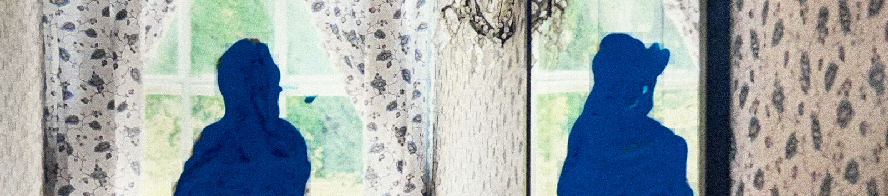

Fine Art 2D — Space Oddity
Unit 1, Week 4

Research
Nigel Cooke — New Accursed Art Club (2007)
“Painting over the thing completely in white and then finding the image again throws up new shapes and new images.... Often what I like about paintings is the kind of mystery of the making. ...I kind of like the fact that the painting has its own logic, and you just have to let it be what it is.”
Nigel Cooke seems to deliberately move himself away from knowing the final destination. He intentionally sets up blinds, dead ends, and obstacles in his work: adding things he knows he will remove, painting the whole thing white and “excavating” the image underneath, liberally erasing. His process involves getting lost. The painting becomes mysterious even to him. The characters in the painting even begin to speak on their own…
Although he doesn’t make collages in the conventional sense, there is something very collage-like about his process: images are assembled, obscured, fragmented, removed, and recombined, often with no clear idea of how the parts will eventually relate to one another. Rather than having a predetermined composition already in his mind, he allows unexpected elements to emerge as well as the relationships between them.
“When I make a body of work, there’s always one painting that spawns the others, that the others are kind of satellites of, that opens up a new place, and then you sort of feed on it for a couple of years.”
The paintings spawned by New Accursed Art Club (2007):
Process
(planning, development, outcomes)
“You will be asked to think about how different spaces can be explored through image making. You will explore this through a range of experimental approaches, beginning with collage.”
Reflection + Evaluation
My final piece was a mixed-media work: acrylic paint layered with oil pastel and some coloured pencil. I wasn’t happy with it. Somehow the whole thing managed to look both unfinished and overworked. And too much was happening. Oh the blow to the ego! I think I was trying to experiment with too many things in a single painting: an enormous range of colour, several materials—some of which I had only just begun to understand—and several techniques of application. Then again, perhaps it’s not a final piece at all! Very much like a moment in Nigel Cooke’s process, it’s an experiment, a fertile failure, from which several possibilities have sprung.
What I loved most was the original neutral colour palette, which evolved rather accidentally from my attempts to match the source images. I found myself falling in love with shades of—dare I say—beige: beiges with a breath of green, others warmed by reds and yellows, some hovering somewhere near chartreuse, some near lemon yellow. On their own, these quiet colours are scarcely distinguishable from the tone they originated from, yet when they are all brought together, they awaken something in one another! There’s certainly something pleasurable about working with differences so subtle that the eye has to linger to discover them. I also loved the physical act of layering pastel over an undercolour, then scratching through the surface to uncover the colour beneath. I intend to follow these loose threads further, seeing where they lead.